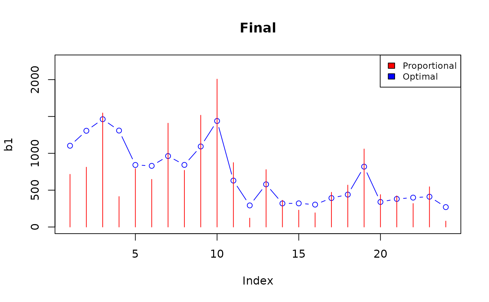

R2BEAT Optimization of precision constraints
2025-01-08
Source: vignettes/CVs_optimization.Rmd
CVs_optimization.RmdIntroduction
In a multivariate stratified sampling design procedure, very often the values of the precision constraints (expressed in terms of maximum expected coefficients of variation set on the target estimates) are set without considering the peculiarities of the distributions of the target variables. As a result, few variables (or even only one) may be responsible for the optimization of the allocation, leaving the others completely ineffective. This is because some precision constraints are very tight and the other ones too loose. This is the reason why the R2BEAT package has been provided with an additional function (‘CVs_hint’) aiming at modifying the initial set of precision constraints to let each target variable influence the optimization process. This is done by considering the variability of the target variables in the different strata: initial precision constraints are adjusted so to relax those pertaining to the variables characterized by a higher variability, and to tighten those related to the variables with less variability.
Another issue is related to the characteristics of the allocation of sampling units in the strata: it may happen that it can be very different from the proportional one. In some cases it may be desirable to limit the distance between the two allocations, avoiding the cases of too much oversampling in small strata. It is possible to obtain this, also in this case by changing the precision constraints. To get this result, it is possible to make use of a genetic algorithm, that explores the space of the possible combinations of values of the precision constraints, with the aim of maximizing the coefficient of correlation of the two distributions (optimal and proportional allocations).
1. Setting
In this study, we show how it is possible to start from a “neutral” set of precision constraints (equal CVs for all variables for a given domain level), and modify them, so to:
first, balance the influence of all the variables on the determination of the best allocation, or at least, to avoid that only a small fraction plays a role;
secondly, get the optimal allocation closer to the proportional one.
We consider a strata dataframe containing information on labor force in a country. Each stratum belongs to three different domain levels:
load("strata.RData")
# strata$DOM3 <- NULL # de-comment if you want to execute on 2 domains
str(strata)## 'data.frame': 24 obs. of 18 variables:
## $ STRATUM : chr "north_1_3" "north_1_4" "north_1_5" "north_1_6" ...
## $ stratum_label: chr "north_1_3" "north_1_4" "north_1_5" "north_1_6" ...
## $ DOM1 : chr "National" "National" "National" "National" ...
## $ DOM2 : Factor w/ 3 levels "north","center",..: 1 1 1 1 1 1 1 1 2 2 ...
## $ N : num 92780 105327 200757 53612 102907 ...
## $ M1 : num 0.748 0.776 0.782 0.776 0.757 ...
## $ M2 : num 0.227 0.203 0.199 0.203 0.21 ...
## $ M3 : num 0.0252 0.0214 0.0192 0.0211 0.0329 ...
## $ M4 : num 29464 29364 27095 25726 27749 ...
## $ S1 : num 0.434 0.417 0.413 0.417 0.429 ...
## $ S2 : num 0.419 0.402 0.399 0.402 0.407 ...
## $ S3 : num 0.157 0.145 0.137 0.144 0.178 ...
## $ S4 : num 29839 27542 23575 19557 24520 ...
## $ CENS : num 0 0 0 0 0 0 0 0 0 0 ...
## $ COST : num 1 1 1 1 1 1 1 1 1 1 ...
## $ alloc : num 360 377 682 191 455 373 759 440 181 233 ...
## $ SOLUZ : num 352 368 667 187 444 365 742 431 177 227 ...
## $ DOM3 : chr "north_1_3" "north_1_4" "north_1_5" "north_1_6" ...We consider as target variables:
target_vars <- c("active","inactive","unemployed","income_hh")
target_vars## [1] "active" "inactive" "unemployed" "income_hh"We initially set the following precision constraints:
# De-comment if you want to execute on 2 domains
# cv_equal <- as.data.frame(list(DOM = c("DOM1","DOM2"),
# CV1 = c(0.05,0.10),
# CV2 = c(0.05,0.10),
# CV3 = c(0.05,0.10),
# CV4 = c(0.05,0.10)))
# De-comment if you want to execute on 3 domains
cv_equal <- as.data.frame(list(DOM = c("DOM1","DOM2","DOM3"),
CV1 = c(0.05,0.10,0.15),
CV2 = c(0.05,0.10,0.15),
CV3 = c(0.05,0.10,0.15),
CV4 = c(0.05,0.10,0.15)))
cv_equal## DOM CV1 CV2 CV3 CV4
## 1 DOM1 0.05 0.05 0.05 0.05
## 2 DOM2 0.10 0.10 0.10 0.10
## 3 DOM3 0.15 0.15 0.15 0.15and proceed with an initial allocation:
equal <- beat.1st(strata,cv_equal)with the following total sample size and sensitivity:
## [1] 16973
equal$sensitivity[equal$sensitivity$`Sensitivity 10%` > 1,]## Type Dom Var Planned CV Actual CV Sensitivity 10%
## 20 DOM3 1 V3 0.15 0.1499 75
## 24 DOM3 2 V3 0.15 0.1500 81
## 28 DOM3 3 V3 0.15 0.1500 77
## 32 DOM3 4 V3 0.15 0.1500 63
## 36 DOM3 5 V3 0.15 0.1500 50
## 40 DOM3 6 V3 0.15 0.1498 50
## 44 DOM3 7 V3 0.15 0.1499 52
## 48 DOM3 8 V3 0.15 0.1498 41
## 52 DOM3 9 V3 0.15 0.1500 338
## 56 DOM3 10 V3 0.15 0.1500 400
## 60 DOM3 11 V3 0.15 0.1500 449
## 64 DOM3 12 V3 0.15 0.1500 398
## 68 DOM3 13 V3 0.15 0.1500 259
## 72 DOM3 14 V3 0.15 0.1499 255
## 76 DOM3 15 V3 0.15 0.1500 296
## 80 DOM3 16 V3 0.15 0.1500 259
## 83 DOM3 17 V2 0.15 0.1498 36
## 87 DOM3 18 V2 0.15 0.1496 34
## 91 DOM3 19 V2 0.15 0.1497 33
## 95 DOM3 20 V2 0.15 0.1498 28
## 99 DOM3 21 V2 0.15 0.1496 35
## 103 DOM3 22 V2 0.15 0.1497 37
## 107 DOM3 23 V2 0.15 0.1498 33
## 111 DOM3 24 V2 0.15 0.1494 25We see that the 3rd variable ‘unemployed’ is the one that determines almost always the optimal allocation, while the 2nd one (‘inactive’) has a lower influence.
2. Modification of initial precision constraints
We now try to change the initial precision constraints to balance the effect of the target variables.
To this aim, we make use of the function ‘CVs_hint’. This function modifies the initial values of CVs by considering the variability of the target variables in the different strata, for each domain level:
cv_mod <- CVs_hint(strata,cv_equal)
cv_mod## DOM CV1 CV2 CV3 CV4
## 1 DOM1 0.03604821 0.0947973 0.1326679 0.04540080
## 2 DOM2 0.07808286 0.1897451 0.3435119 0.08979977
## 3 DOM3 0.12188868 0.2824164 0.5094129 0.12909995Actually, these new CVs are in some cases much higher than the initial ones. But we can see that the new corresponding sample size is much lower than the initial one:
## [1] 2308To correctly compare the new values of the CVs to the initial ones, we have to re-calculate them in correspondence to the same required sample size. To do this, we make use of the function ‘adjustCVs’:
target_size <- sum(equal$alloc$ALLOC[-nrow(equal$alloc)])
cv_mod2 <- adjust_CVs(target_size= target_size,
strata=strata,
errors=cv_mod,
adj_rate = 0.05)##
## Size: 2552
## Size: 2830
## Size: 3129
## Size: 3466
## Size: 3839
## Size: 4249
## Size: 4707
## Size: 5212
## Size: 5769
## Size: 6386
## Size: 7071
## Size: 7828
## Size: 8665
## Size: 9592
## Size: 10617
## Size: 11744
## Size: 13001
## Size: 14381
## Size: 15907
## Size: 17597
## Size: 17597
cv_mod2## DOM CV1 CV2 CV3 CV4
## 1 DOM1 0.01292278 0.03398350 0.04755956 0.01627555
## 2 DOM2 0.02799160 0.06802096 0.12314418 0.03219195
## 3 DOM3 0.04369537 0.10124231 0.18261737 0.04628051We see now that only in only in a few cases the CVs are slightly higher than in the initial set.
The new sensitivity:
intermediate2 <- beat.1st(strata,cv_mod2)
intermediate2$sensitivity[intermediate2$sensitivity$`Sensitivity 10%` >1,]## Type Dom Var Planned CV Actual CV Sensitivity 10%
## 21 DOM3 1 V4 0.04628051 0.0462 80
## 25 DOM3 2 V4 0.04628051 0.0462 82
## 27 DOM3 3 V2 0.10124231 0.1012 65
## 30 DOM3 4 V1 0.04369537 0.0437 61
## 34 DOM3 5 V1 0.04369537 0.0436 66
## 38 DOM3 6 V1 0.04369537 0.0437 66
## 42 DOM3 7 V1 0.04369537 0.0436 16
## 43 DOM3 7 V2 0.10124231 0.1012 48
## 46 DOM3 8 V1 0.04369537 0.0436 76
## 52 DOM3 9 V3 0.18261737 0.1825 230
## 56 DOM3 10 V3 0.18261737 0.1826 272
## 60 DOM3 11 V3 0.18261737 0.1826 304
## 64 DOM3 12 V3 0.18261737 0.1826 272
## 68 DOM3 13 V3 0.18261737 0.1825 175
## 72 DOM3 14 V3 0.18261737 0.1826 173
## 76 DOM3 15 V3 0.18261737 0.1826 201
## 80 DOM3 16 V3 0.18261737 0.1826 176
## 85 DOM3 17 V4 0.04628051 0.0462 79
## 86 DOM3 18 V1 0.04369537 0.0437 91
## 90 DOM3 19 V1 0.04369537 0.0437 120
## 94 DOM3 20 V1 0.04369537 0.0437 143
## 98 DOM3 21 V1 0.04369537 0.0437 89
## 105 DOM3 22 V4 0.04628051 0.0463 272
## 106 DOM3 23 V1 0.04369537 0.0437 165
## 110 DOM3 24 V1 0.04369537 0.0437 206We see that now all the variables play a role in the determination of the best allocation.
3. Get the optimal allocation closer to the proportional one
Consider the last obtained solution:
intermediate2$alloc## STRATUM ALLOC PROP EQUAL
## north_1_3 north_1_3 1146 736.19049 733.2083
## north_1_4 north_1_4 1357 835.74840 733.2083
## north_1_5 north_1_5 1520 1592.96610 733.2083
## north_1_6 north_1_6 1359 425.40035 733.2083
## north_2_3 north_2_3 875 816.54619 733.2083
## north_2_4 north_2_4 862 665.73743 733.2083
## north_2_5 north_2_5 1001 1450.38573 733.2083
## north_2_6 north_2_6 876 791.74201 733.2083
## center_1_3 center_1_3 400 1561.49670 733.2083
## center_1_4 center_1_4 410 2066.31644 733.2083
## center_1_5 center_1_5 323 899.59178 733.2083
## center_1_6 center_1_6 304 124.21132 733.2083
## center_2_3 center_2_3 330 801.70018 733.2083
## center_2_4 center_2_4 328 373.22113 733.2083
## center_2_5 center_2_5 317 235.43337 733.2083
## center_2_6 center_2_6 377 198.25091 733.2083
## south_1_3 south_1_3 395 484.95101 733.2083
## south_1_4 south_1_4 452 585.63565 733.2083
## south_1_5 south_1_5 599 1090.20941 733.2083
## south_1_6 south_1_6 711 452.78334 733.2083
## south_2_3 south_2_3 444 435.82668 733.2083
## south_2_4 south_2_4 1357 328.19909 733.2083
## south_2_5 south_2_5 825 561.87093 733.2083
## south_2_6 south_2_6 1029 82.58537 733.2083
## Total 17597 17597.00000 17597.0000We can calculate the Pearson correlation coefficient between the optimal and proportional allocations:
cor(intermediate2$alloc$ALLOC[-nrow(intermediate2$alloc)],intermediate2$alloc$PROP[-nrow(intermediate2$alloc)])## [1] 0.09962086We want to get the optimal allocation closer to the proportional one. For instance, we want that the correlation coefficient be increased to 0.5.
To obtain this result, we make use of a particular genetic algorithm, the quantum genetic algorithm, implemented in the R package QGA.
3.1 Fitness function
First, we define the following fitness function:
fitness_cvs <- function(solution,eval_func_inputs) {
strata <- eval_func_inputs[[1]]
vett <- eval_func_inputs[[2]]
cv <- eval_func_inputs[[3]]
vettmin <- eval_func_inputs[[4]]
vettmax <- eval_func_inputs[[5]]
nvals <- eval_func_inputs[[6]]
nvars <- ncol(cv) - 1
cv_corr <- cv
n <- 0
for (k in c(1:nrow(cv))) {
for (m in c(1:nvars)) {
n <- n+1
cv_corr[k,m+1] <- seq(from=vettmin[n],
to=vettmax[n],
by=(vettmax[n]-vettmin[n])/nvals)[solution[n]]
}
}
cv_corr
a <- beat.1st(strata,cv_corr)
b <- ks.test(a$alloc$ALLOC[-nrow(a$alloc)],a$alloc$PROP[-nrow(a$alloc)])
c <- cor(a$alloc$ALLOC[-nrow(a$alloc)],a$alloc$PROP[-nrow(a$alloc)])
#---------- Fitness function ----------------
fitness <- c
return(fitness)
}3.2 Setting the parameters
We set the parameters required by the QGA function:
nvars <- ncol(cv_mod2) - 1
vett <- NULL
for (k in c(1:nrow(cv_mod2))) {
vett <- c(vett,cv_mod2[k,c(2:(nvars+1))])
}
vett <- unlist(vett)
vettmin <- vett * 0.6
vettmax <- vett * 1.4
Genome = length(vett)
nvalues_sol = 4096 # 2^12 ==> 12 qubits
eval_func_inputs = list(strata,
vett,
cv_mod2,
vettmin,
vettmax,
nvalues_sol
)
popsize = 20
generation_max = 200
nvalues_sol = nvalues_sol
thetainit = 3.1415926535 * 0.5
thetaend = 3.1415926535 * 0.025
pop_mutation_rate_init = 1/(popsize + 1)
pop_mutation_rate_end = 1/(popsize + 1)
mutation_rate_init = 1/(Genome + 1)
mutation_rate_end = 1/(Genome + 1)
mutation_flag = TRUE
plotting = TRUE
verbose = FALSE
progress = FALSE
eval_fitness = fitness_cvs
eval_func_inputs = eval_func_inputs
stop_limit = 0.5Some explanations regarding the parameters. The parameters ‘vettmin’ and ‘vettmax’ are fundamental to determine the space of possible solutions.
In fact, consider their values:
vettmin## CV1 CV2 CV3 CV4 CV1 CV2
## 0.007753667 0.020390099 0.028535739 0.009765329 0.016794963 0.040812574
## CV3 CV4 CV1 CV2 CV3 CV4
## 0.073886510 0.019315172 0.026217225 0.060745389 0.109570421 0.027768309
vettmax## CV1 CV2 CV3 CV4 CV1 CV2 CV3
## 0.01809189 0.04757690 0.06658339 0.02278577 0.03918825 0.09522934 0.17240186
## CV4 CV1 CV2 CV3 CV4
## 0.04506873 0.06117352 0.14173924 0.25566432 0.06479272The values in vettmin are the minimum values that the CVs can assume, while the values in vettmax are the maximum ones. This means that, for instance, when trying to define the best value for CV1 in the first domain, the genetic algorithm will search in the range from 0.007916888 to 0.01847274. The same for the other CVs and the other domains.
The parameter ‘nvalues_sol’ indicates the number of possible different values considered for each element in the genome: by setting it to 4096, it means that for each precision constraint, 4096 possible values will be considered, the ones obtained by dividing by 4096 the interval between the minimum and the maximum value set for each precision constraint.
The parameter ‘eval_func_inputs’ is a list containing all the information required by the fitness function.
Parameters ‘thetainit’ and ‘thetaend’ are the initial and final values expressed in degrees for the rotation gate used in the quantum genetic algorithm. The rotation is high at the beginning of the iterations (to explore mores solutions), lower at the end (to refine the best solution found).
The same for parameters from ‘pop_mutation_rate_init’ to ‘pop_mutation_rate_end’, that govern the rate of mutation in the solutions.
Very important is the ‘stop_limit’ parameter: the iterations are stopped when this limit is reached. In our case it is set to 0.5: this means that when the correlation coefficient reaches this limit, the algorithm stops and output the related solution.
3.3 Execution of the genetic algorithm
set.seed(1234)
solutionQGA <- QGA(popsize,
generation_max,
nvalues_sol,
Genome,
thetainit,
thetaend,
pop_mutation_rate_init,
pop_mutation_rate_end,
mutation_rate_init,
mutation_rate_end,
mutation_flag = TRUE,
plotting = FALSE,
verbose = FALSE,
progress = FALSE,
eval_fitness,
eval_func_inputs,
stop_limit)##
## *** Best fitness: 0.5099748
QGA:::plot_Output(solutionQGA[[2]])So, we have obtained a solution whose correlation coefficient is 0.5, the desired one.
4. Analysis of the final solution
First, we consider the new set of precision constraints related to the solution proposed by the genetic algorithm:
solution <- solutionQGA[[1]]
cv_best <- cv_mod2
n <- 0
nvals <- nvalues_sol
for (k in c(1:nrow(cv_mod2))) {
for (m in c(1:nvars)) {
n <- n+1
diff
cv_best[k,m+1] <- seq(from=vettmin[n],
to=vettmax[n],
by=(vettmax[n]-vettmin[n])/nvals)[solution[n]]
}
}
cv_best## DOM CV1 CV2 CV3 CV4
## 1 DOM1 0.007766286 0.04269841 0.02931601 0.02277941
## 2 DOM2 0.033376709 0.05598444 0.10041542 0.02157238
## 3 DOM3 0.060516387 0.13693418 0.25327460 0.06462098They are, in some cases, higher than the initial ones.
But consider that, now, the required sample size is lower with these new constraints:
intermediate3 <- beat.1st(strata,cv_best)
sum(intermediate3$alloc$ALLOC[-nrow(intermediate3$alloc)])## [1] 10398Also in this case, to compare the new precision constraints with the initial ones we perform an adjustment, varying the new set until we reach the previous sample size:
target_size <- sum(intermediate2$alloc$ALLOC[-nrow(intermediate2$alloc)])
cv_final <- adjust_CVs(target_size = target_size,
strata=strata,
errors=cv_best,
adj_rate = 0.05)##
## Size: 11507
## Size: 12738
## Size: 14096
## Size: 15597
## Size: 17256
## Size: 19091
## Size: 19091
cv_final## DOM CV1 CV2 CV3 CV4
## 1 DOM1 0.005708934 0.03138725 0.02154996 0.01674496
## 2 DOM2 0.024534948 0.04115370 0.07381456 0.01585768
## 3 DOM3 0.044485106 0.10065921 0.18618010 0.04750236It can be seen that now, only in the third domain level the value of CV3 overcomes the previous limits, while in all the other cases they are well below.
We can visualize the overall situation:
par(mfrow=c(1,3))
plot(t(cv_final[1,c(2:5)]),col="red",type="b",
xaxt="n",xlab="",ylab="CV values",ylim=c(0,max(cv_final[1,c(2:5)],cv_mod2[1,c(2:5)])*1.2))
axis(1, at=c(1:4), lab=c("CV1", "CV2", "CV3", "CV4"),las=2)
lines(t(cv_mod2[1,c(2:5)]),col="blue",type="b")
lines(t(cv_equal[1,c(2:5)]),col="darkgreen",type="b")
title("Domain level DOM1")
legend("bottomleft", c("Initial CVs","Intermediate CVs","Final CVs"),
fill = c("darkgreen","blue","red"), cex=0.8)
plot(t(cv_final[2,c(2:5)]),col="red",type="b",
xaxt="n",xlab="",ylab="CV values",ylim=c(0,max(cv_final[2,c(2:5)],cv_mod2[2,c(2:5)])*1.2))
axis(1, at=c(1:4), lab=c("CV1", "CV2", "CV3", "CV4"),las=2)
lines(t(cv_mod2[2,c(2:5)]),col="blue",type="b")
lines(t(cv_equal[2,c(2:5)]),col="darkgreen",type="b")
title("Domain level DOM2")
legend("bottomleft", c("Initial CVs","Intermediate CVs","Final CVs"),
fill = c("darkgreen","blue","red"), cex=0.8)
# De-comment with 3 domains
plot(t(cv_final[3,c(2:5)]),col="red",type="b",
xaxt="n",xlab="",ylab="CV values",ylim=c(0,max(cv_final[3,c(2:5)],cv_mod2[3,c(2:5)])*1.2))
axis(1, at=c(1:4), lab=c("CV1", "CV2", "CV3", "CV4"),las=2)
lines(t(cv_mod2[3,c(2:5)]),col="blue",type="b")
lines(t(cv_equal[3,c(2:5)]),col="darkgreen",type="b")
title("Domain level DOM3")
legend("bottomleft", c("Initial CVs","Intermediate CVs","Final CVs"),
fill = c("darkgreen","blue","red"), cex=0.8)Finally, we analyze the obtained final allocation in the strata.
## [1] 19091## [1] 16973
a1 <- equal$alloc$ALLOC[-nrow(equal$alloc)]
a2 <- equal$alloc$PROP[-nrow(equal$alloc)]
b1 <- final$alloc$ALLOC[-nrow(final$alloc)]
b2 <- final$alloc$PROP[-nrow(final$alloc)]
par(mfrow=c(1,1))
top <- max(a1,a2,b1,b2)
plot(a1,type="b",col="blue",ylim=c(0,top))
lines(a2,type="h",col="red")
title("Initial")
legend("topright", c("Proportional","Optimal"), fill = c("red", "blue"), cex=0.8)
plot(b1,type="b",col="blue",ylim=c(0,top))
lines(b2,type="h",col="red")
title("Final")
legend("topright", c("Proportional","Optimal"), fill = c("red", "blue"), cex=0.8)We may not be satisfied by the situation in the 22nd and 24th sub-domains where the new solution yields a greater distance of the optimal allocations from the proportional ones.
We inspect the sensitivity:
## Type Dom Var Planned CV Actual CV Sensitivity 10%
## 102 DOM3 22 V1 0.04448511 0.0340 1
## 103 DOM3 22 V2 0.10065921 0.0553 1
## 104 DOM3 22 V3 0.18618010 0.0329 0
## 105 DOM3 22 V4 0.04750236 0.0475 251
## 110 DOM3 24 V1 0.04448511 0.0445 199
## 111 DOM3 24 V2 0.10065921 0.0504 1
## 112 DOM3 24 V3 0.18618010 0.0352 0
## 113 DOM3 24 V4 0.04750236 0.0227 1and find that the reason for the oversampling in these two domains is due to the 1st and 4th target variables. We can change their CVs in the 3rd domain level:
cv_final[3,2] <- 0.10
cv_final[3,5] <- 0.10and verify the new situation:
## [1] 17091
b1 <- final2$alloc$ALLOC[-nrow(final2$alloc)]
b2 <- final2$alloc$PROP[-nrow(final2$alloc)]
plot(b1,type="b",col="blue",ylim=c(0,top))
lines(b2,type="h",col="red")
title("Final")
legend("topright", c("Proportional","Optimal"), fill = c("red", "blue"), cex=0.8)
Much better.
Again, we re-determine the CVs in order to reach the initial sample size:
target_size <- sum(final$alloc$ALLOC[-nrow(final$alloc)])
cv_final2 <- adjust_CVs(target_size= target_size,
strata=strata,
errors=cv_final,
adj_rate=0.05)##
## Size: 18916
## Size: 20933
## Size: 20933
cv_final2## DOM CV1 CV2 CV3 CV4
## 1 DOM1 0.005152313 0.02832700 0.01944884 0.01511233
## 2 DOM2 0.022142790 0.03714122 0.06661764 0.01431156
## 3 DOM3 0.090250000 0.09084494 0.16802754 0.09025000
plot(t(cv_final2[3,c(2:5)]),col="red",type="b",
xaxt="n",xlab="",ylab="CV values",ylim=c(0,max(cv_final2[3,c(2:5)],cv_mod2[3,c(2:5)])*1.2))
axis(1, at=c(1:4), lab=c("CV1", "CV2", "CV3", "CV4"),las=2)
lines(t(cv_mod2[3,c(2:5)]),col="blue",type="b")
lines(t(cv_equal[3,c(2:5)]),col="darkgreen",type="b")
title("Domain level DOM3")
legend("topleft", c("Initial CVs","Intermediate CVs","Final CVs"),
fill = c("darkgreen","blue","red"), cex=0.8)
Finally, we analyze the changes in the expected CVs:
a <- beat.1cv(strata,cv_equal,equal$alloc$ALLOC)
b <- beat.1cv(strata,cv_mod2,intermediate2$alloc$ALLOC)
c <- beat.1cv(strata,cv_final2,final$alloc$ALLOC)
row.names(a) <- NULL
tot <- cbind(a[,c(1,2,4)],b[,4],c[,4])
colnames(tot)[3:5] <- c("Initial(1)","Intermediate(2)","Final(3)")
tot$Diff1 <- tot$`Intermediate(2)`- tot$`Initial(1)`
tot$Diff2 <- tot$`Final(3)`- tot$`Intermediate(2)`
colnames(tot)[6:7] <- c("Diff.(2-1)","Diff.(3-2)")
# knitr::kable(tot)The average change due to the first step (balancing the influence of all variables in the determination of the best allocation):
## [1] -0.3774151and the average change due to the second step (bringing the opimal allocation closer to the proportional):
## [1] 0.07574547We can calculate the same indicators by weighting with the populations in the domains:
# tot$DOMAIN <- sub("/.*", "", tot$`DOMAIN/VAR`)
dom1 <- aggregate(strata$N,by=list(strata$DOM1),FUN=sum)
dom2 <- aggregate(strata$N,by=list(strata$DOM2),FUN=sum)
dom3 <- aggregate(strata$N,by=list(strata$DOM3),FUN=sum)
tot1 <- merge(tot,dom1,by.x="DOMAIN",by.y="Group.1")
tot2 <- merge(tot,dom2,by.x="DOMAIN",by.y="Group.1")
tot3 <- merge(tot,dom3,by.x="DOMAIN",by.y="Group.1")
tottot <- rbind(tot1,tot2,tot3)
AvgInitial <- sum(tottot$`Initial(1)` * tottot$x) / sum(tottot$x)
AvgDiff2_1 <- sum(tottot$`Diff.(2-1)` * tottot$x) / sum(tottot$x)
AvgDiff2_1 / AvgInitial## [1] -0.3867286## [1] -0.07358291We can conclude that the first step has a strong impact on the values of the expected CVs, while the second step is negligible from this point of view.